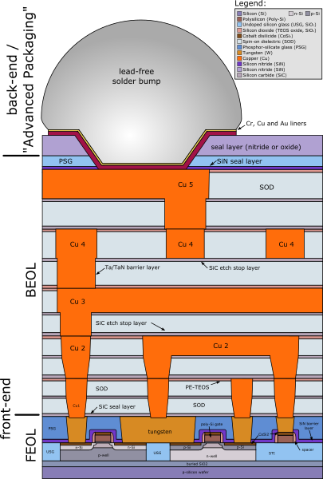
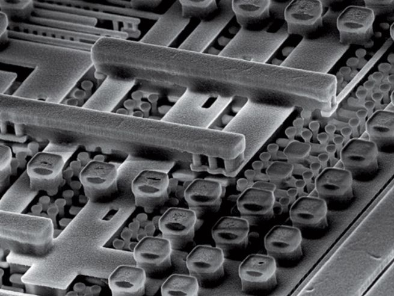
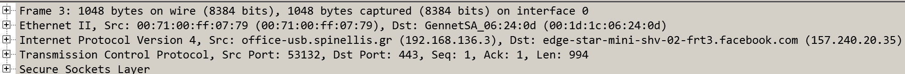

Coding Bootcamp: The life of a "Like"
Transistors and gates
- Transistor: a miniature switch
- Logic gate: digital building block
A NAND gate as transistors

By JustinForce - Own work, CC BY-SA 3.0
Digits and counting
- How to add two bits
- Counting with 0 and 1
A four bit ALU

By Poil - Own work, CC BY-SA 3.0
Chips and chip contruction
- Gates are put together in integrated circuits
- Chips can serve various functions, such as CPU, memory, or interface
- Early ICs contained 2-6 gates (8-30 transistors)
- A modern CPU can contain 20 billion transistors
A NAND gate in CMOS

By Jamesm76 at English Wikipedia, Public Domain
Structure of a chip

By Cepheiden - self made, CC BY 2.5
A gate in three dimensions

By David Carron at English Wikipedia, Public Domain
A chip in a DIL package

By Zephyris at English Wikipedia - CC BY-SA 3.0
A peek through the window

By Zephyris at English Wikipedia - CC BY-SA 3.0
Flash memory through electron microscopy

By Micron Technology Inc.
Inside a modern computer
- CPU
- RAM
- Secondary storage (magnetic disk, SSD)
- ROM
- Interfaces
- USB
- DMA
- Networking
- Graphics
Low-level programming
- Registers
- Arithmetic instructions
- Control flow
- Memory access
- Stack
High-level programming
- Compiling expressions into instructions
- Interpreting instructions
- Tokens
- Constants
- Operators
- Reserved words
- Comments
- Syntax
Commonly used programming languages
- C
- C++, Go, Rust
- Java, C#, Swift
- JavaScript, PHP
- Python, Ruby, Perl
Memory organization
- Code
- Stack
- Heap
- Constants
Operating system
- Process isolation
- Device virtualization
- Multitasking
- Application host
- System calls (API)
Network layers
- Physical
- Link
- Network
- Transport
- Session
- Presentation
- Application
Building the web
Anatomy of a captured network packet

A trace of a packet's route

Serving requests
- Data centers
- Load balancing
- Application servers
- Databases
- Microservices

This work is licensed under a Creative Commons Attribution-NonCommercial-ShareAlike 4.0 International License.
{kind=link}